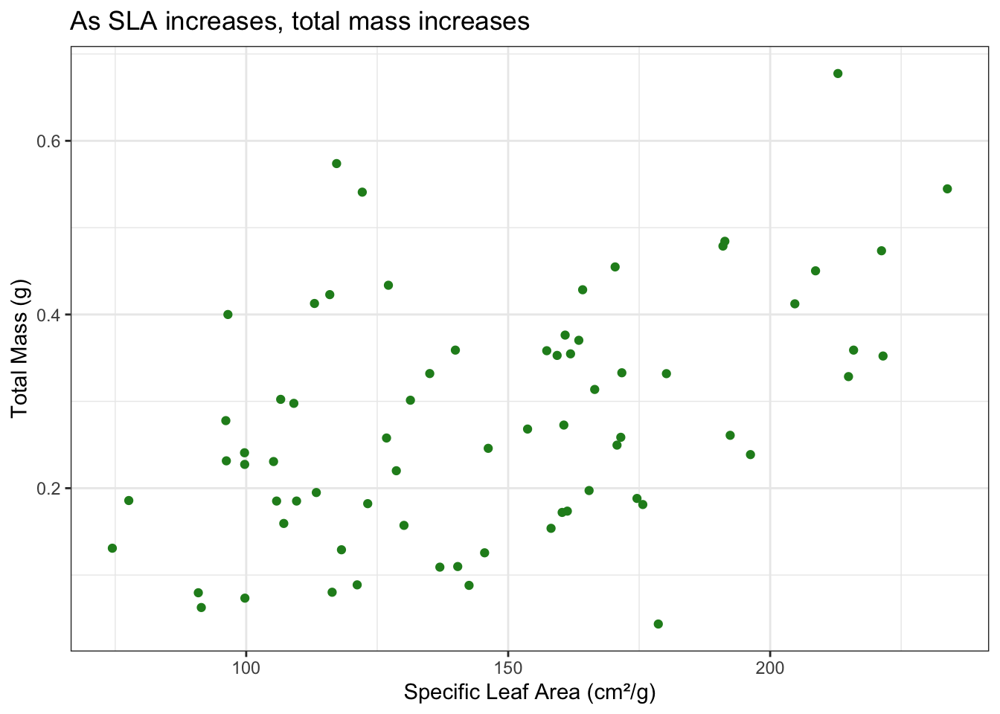
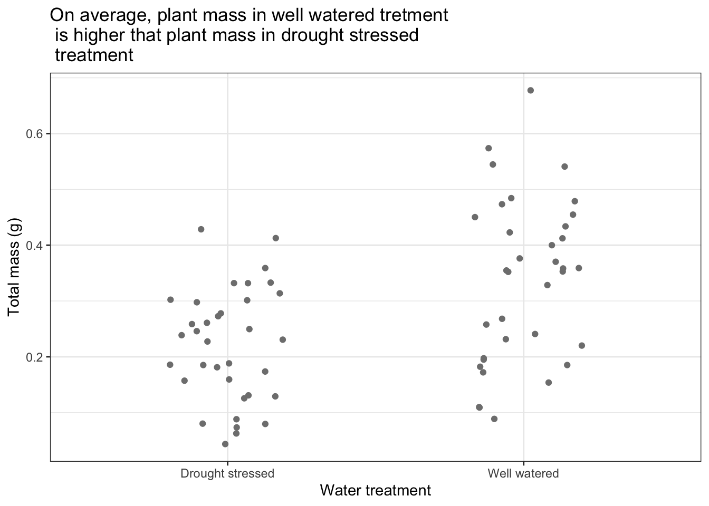
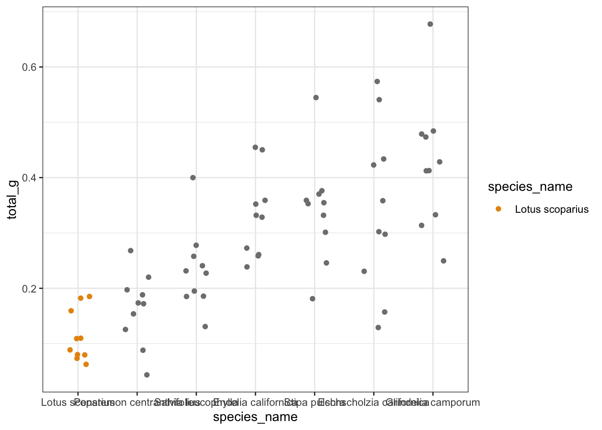

# read in your packages here
library(tidyverse) # general use
library(here) # file organization
library(janitor) # cleaning data frames
library(readxl) # reading excel files
library(scales) # modifying axis labels
library(ggeffects) # getting model predictions
library(MuMIn) # model selection
# read in your data here
drought_exp <- read_xlsx(
path = here(
"data",
"Valliere_etal_EcoApps_Data.xlsx"
),
sheet = "First Harvest"
)Workshop 8 TEMPLATE
9 AM
In this workshop, we will answer the question: How do specific leaf area, water treatment, and species influence plant mass?
Specific leaf area is a continuous variable measured in cm2/g.
Water treatment is a categorical variable (i.e. a factor) with 2 levels: drought stressed (DS) and well watered (WW).
Species is a categorical variable (again, a factor) with 6 levels.
| Species name | Species code | Common name |
|---|---|---|
| Encelia californica | ENCCAL | Bush sunflower |
| Eschscholzia californica | ESCCAL | California poppy |
| Penstemon centranthifolius | PENCEN | Scarlet bugler |
| Grindelia camporums | GRINCAM | Gumweed |
| Salvia leucophylla | SALLEU | Purple sage |
| Stipa pulchra | STIPUL | Purple needlegrass |
| Lotus scoparius | LOTSCO | Deerweed |
1. Set up
# storing colors to use for species, saving all colors as objects
lotsco_col <- "#E69512"
pencen_col <- "#D6264F"
salleu_col <- "#6D397D"
enccal_col <- "#3A5565"
stipul_col <- "#3F564F"
esccal_col <- "#515481"
gricam_col <- "#6C91BD"
# storing colors to use for water treatments
ds_col <- "#A62F03"
ww_col <- "#045CB4"
# storing a ggplot theme (that will be used for all ggplots)
theme_set(theme_bw())2. Clean data
Data source: Valliere, Justin; Zhang, Jacqueline; Sharifi, M.; Rundel, Philip (2019). Data from: Can we condition native plants to increase drought tolerance and improve restoration success? [Dataset]. Dryad. https://doi.org/10.5061/dryad.v0861f7
# creating a new object called "drought_exp_clean"
drought_exp_clean <- drought_exp |>
# cleaning up column names
clean_names() |>
# adding a new column called species name and changing the species abbreviation to the full names
mutate(species_name = case_match(
species,
"ENCCAL" ~ "Encelia californica", # bush sunflower
"ESCCAL" ~ "Eschscholzia californica", # California poppy
"PENCEN" ~ "Penstemon centranthifolius", # Scarlet bugler
"GRICAM" ~ "Grindelia camporum", # Gumweed
"SALLEU" ~ "Salvia leucophylla", # purple sage
"STIPUL" ~ "Stipa pulchra", # purple needlegrass
"LOTSCO" ~ "Lotus scoparius" # deerweed
)) |>
# add new column for treatment and use the abbreviations and changing them to the corresponding names
mutate(water_treatment = case_match(
water,
"WW" ~ "Well watered",
"DS" ~ "Drought stressed"
)) |>
# making sure that categorical variables are factors, and setting factor level order, ordered in smallest to biggest mass and telling R that these names are important in a specif order
mutate(species_name = as_factor(species_name),
species_name = fct_relevel(species_name,
"Lotus scoparius",
"Penstemon centranthifolius",
"Salvia leucophylla",
"Encelia californica",
"Stipa pulchra",
"Eschscholzia californica",
"Grindelia camporum")) |>
mutate(water_treatment = as_factor(water_treatment),
water_treatment = fct_relevel(water_treatment,
"Drought stressed",
"Well watered")) |>
#
select(species_name, water_treatment, sla, total_g) Insert code to double check the structure of the data frame here.
str(drought_exp_clean)tibble [70 × 4] (S3: tbl_df/tbl/data.frame)
$ species_name : Factor w/ 7 levels "Lotus scoparius",..: 4 4 4 4 4 4 4 4 4 4 ...
$ water_treatment: Factor w/ 2 levels "Drought stressed",..: 2 2 2 2 2 1 1 1 1 1 ...
$ sla : num [1:70] 170 215 209 216 222 ...
$ total_g : num [1:70] 0.455 0.329 0.45 0.359 0.352 ...slice_sample(
drought_exp_clean,
n = 10
)# A tibble: 10 × 4
species_name water_treatment sla total_g
<fct> <fct> <dbl> <dbl>
1 Stipa pulchra Drought stressed 140. 0.359
2 Lotus scoparius Well watered 121. 0.0887
3 Stipa pulchra Well watered 162. 0.355
4 Eschscholzia californica Well watered 122. 0.541
5 Salvia leucophylla Well watered 113. 0.195
6 Grindelia camporum Drought stressed 172. 0.333
7 Encelia californica Well watered 222. 0.352
8 Grindelia camporum Well watered 191. 0.484
9 Penstemon centranthifolius Well watered 165. 0.197
10 Encelia californica Well watered 216. 0.359 Insert code to display 10 random rows from the data frame here.
3. Visualizing data
What is the relationship between SLA and plant mass?
# base layer: ggplot
ggplot(data = drought_exp_clean,
aes(x = sla,
y = total_g)) +
geom_point(
color = "forestgreen"
) +
labs(
y = "Total Mass (g)",
x = "Specific Leaf Area (cm\U00B2/g)",
title = "As SLA increases, total mass increases")
Make a scatterplot to visualize SLA (the predictor) on the x-axis, and total mass (the response) on the y-axis.
Label the axes with units where appropriate.
Add a title describing the relationship (e.g. as SLA increases, total mass ______).
What are the differences in total mass between water treatments?
Make a jitterplot to visualize the differences in plant mass between water treatments.
Label the axes with units where appropriate.
Add a title describing the differences in (mean or median) plant mass between water treatments.
ggplot(data = drought_exp_clean,
aes(
x = water_treatment,
y = total_g,
color = water_treatment)) +
geom_jitter(
height = 0,
width = 0.2
) +
scale_color_manual(values = c(
"Drought Stressed" = ds_col,
"Well Watered" = ww_col
)) +
labs(x = "Water treatment",
y = "Total mass (g)",
title = "On average, plant mass in well watered tretment \n is higher that plant mass in drought stressed \n treatment")
What are the differences in total mass between species?
Make a jitterplot to visualize the differences in plant mass between species.
Label the axes with units where appropriate.
Add a title describing the differences in (mean or median) plant mass between species.
Bonus: order the x-axis by decreasing mean plant mass and wrap the long species names using the label_wrap() function from the scales package.
ggplot(data = drought_exp_clean,
aes(x = species_name,
y = total_g,
color = species_name)) +
geom_jitter(
height = 0,
width = 0.2) +
scale_color_manual(values = c(
"Lotus scoparius" = lotsco_col,
"Penstemon centanthifolius" = pencen_col
))
4. Fitting models
8 models total:
| Model number | SLA | Water treatment | Species | Predictor list |
|---|---|---|---|---|
| 0 | no predictors (null model) | |||
| 1 | X | X | X | all predictors (full model) |
| 2 | X | X | SLA and water treatment | |
| 3 | X | X | SLA and species | |
| 4 | X | X | water treatment and species | |
| 5 | X | SLA | ||
| 6 | X | water treatment | ||
| 7 | X | species |
Model fitting
# model 0: null model
model0 <- lm(
total_g ~ 1,
data = drought_exp_clean
)
# model 1: all predictors
model1 <- lm(
total_g ~ sla + water_treatment + species_name,
data = drought_exp_clean
)
# model 2: SLA and water treatment
model2 <- lm(
total_g ~ sla + water_treatment,
data = drought_exp_clean
)
# model 3: SLA and species
model3 <- lm(
total_g ~ sla + species_name,
data = drought_exp_clean
)
# model 4: water treatment and species
model4 <- lm(
total_g ~ water_treatment + species_name,
data = drought_exp_clean
)
# model 5: SLA
model5 <- lm(
total_g ~ sla,
data = drought_exp_clean
)
# model 6: water treatment
model6 <- lm(
total_g ~ water_treatment,
data = drought_exp_clean
)
# model 7: species
model7 <- lm(
total_g ~ species_name,
data = drought_exp_clean
)Model selection
Insert code to use the AICc() function to calculate the AIC for each model.
Arrange by decreasing AIC.
AICc(
model0,
model1,
model2,
model3,
model4,
model5,
model6,
model7
) |>
arrange(AICc) df AICc
model4 9 -156.19595
model1 10 -153.75361
model3 9 -124.07569
model7 8 -120.30191
model2 4 -95.82521
model5 3 -88.85180
model6 3 -86.76661
model0 2 -74.98036the best model to describe variation in plant mass only includes water treatment and species
Model diagnostics
Insert code to look at the diagnostic plots for the best model.
par(mfrow = c(2,2))
plot(model4)
Diagnostic plots look good Risiduals (standing in for error) look normally distributed based on QQ plot Residuals look homoscedastic
no outliers
Summary
summary(model4)
Call:
lm(formula = total_g ~ water_treatment + species_name, data = drought_exp_clean)
Residuals:
Min 1Q Median 3Q Max
-0.157087 -0.046953 -0.003733 0.041244 0.192657
Coefficients:
Estimate Std. Error t value Pr(>|t|)
(Intercept) 0.05455 0.02451 2.225 0.02973 *
water_treatmentWell watered 0.11695 0.01733 6.746 5.90e-09 ***
species_namePenstemon centranthifolius 0.05003 0.03243 1.543 0.12799
species_nameSalvia leucophylla 0.12020 0.03243 3.706 0.00045 ***
species_nameEncelia californica 0.21774 0.03243 6.714 6.70e-09 ***
species_nameStipa pulchra 0.22881 0.03243 7.055 1.72e-09 ***
species_nameEschscholzia californica 0.23164 0.03243 7.143 1.22e-09 ***
species_nameGrindelia camporum 0.31335 0.03243 9.662 5.53e-14 ***
---
Signif. codes: 0 '***' 0.001 '**' 0.01 '*' 0.05 '.' 0.1 ' ' 1
Residual standard error: 0.07252 on 62 degrees of freedom
Multiple R-squared: 0.7535, Adjusted R-squared: 0.7257
F-statistic: 27.08 on 7 and 62 DF, p-value: < 2.2e-16Insert code to display the summary for the best model.
- two categorical predictors
- each estimate is comparing the
What are the reference levels?
Drought stressed is the reference level for water treatment Lotus scoparius for species (in which plant mass is smallest)
What does the (Intercept) represent?
model estimate when all predictors = 0, but because they are catagorical, its is the model prediction for plant mass for lotus scoparius in the drought stressed treatment. The model predicts that Lotus Scoparius mass int he drought stressed treatment will be 0.055 \(\pm\) 0.025 (SE) g.
What does water_treatmentWell watered represent?
This is the model prediction for the difference in the difference in Lotus mas between the well watered and drought stressed treatments. The model predicts that this difference is 0.12 \(\pm\) 0.017 g.
What does species_namePenstemon centranthifolius represent?
This is the model prediction for the difference between Panstemon mass in the well watered treatment and Lotus mass in the well watered treatment.
What does species_nameEschscholzia californica represent?
difference between Eschscholzia mass in the well watered and Lotus mass in the well watered
Stop and think: what does this model mean?
What is the best model?
The best model includes water treatment and species as predictors.
How much variation in the response (total mass, in grams) does this model explain?
72% of the variation in plant mass can be explained by this model.
How do we interpret the effects of the predictors on the response variable (again, total mass in grams)?
Treatment influences plant mass. Species influences plant mass.
4. Model predictions
Insert code to generate model predictions for the best model.
Rename the x column and group column to match the original data frame (drought_exp_clean).
Look at the object before plotting.
pred <- ggpredict(
model4,
terms = c("water_treatment", "species_name")) |>
rename(water_treatment = x,
species_name = group)5. Final figure
Create a clean, publication ready figure depicting predictions for the best model and the underlying data.
ggplot(data = drought_exp_clean,
aes(
x = water_treatment,
y = total_g,
color = water_treatment)) +
geom_jitter(
height = 0,
width = 0.2
) +
geom_pointrange(data = pred,
aes(water_treatment,
y = predicted,
ymin = conf.low,
ymax = conf.high)) +
scale_color_manual(values = c(
"Drought Stressed" = ds_col,
"Well Watered" = ww_col
)) +
labs(x = "Water treatment",
y = "Total mass (g)") +
facet_wrap(~ species_name,
nrow = 1)
6. Writing
Figure caption
Basic components of test
predictors
response
test
distribution
parameters (degrees of freedom)
test statistic
R2
p-value
significance level
reference level(s)